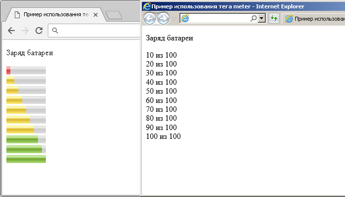

Элемент <meter>— предназначен для отображения скалярной величины в заданном диапазоне или же для графического представления дробного числа. Для использования данного тега должно быть известно максимальное значение.
Атрибуты, которые необходимо использовать совместно с тегом:
| Атрибут | Значение | Описание |
|---|---|---|
| min | number | Атрибут обозначает минимально допустимоезначение.Значение по умолчанию ноль. |
| max | number | Атрибут обозначает максимально возможное значени. Значение по умолчанию один. Если макс. значение задано меньшим чем минимальное, то они меняются местами. |
| low | number | Атрибут определяет низкие значения (но не минимальные). Это значение должно быть меньше чем high.Если указывается значение low меньше, чем значение min, то low=min. |
| high | number | Атрибут отделяет высокие значения (но не максимальные). Если значение high меньше, чем значение low, то high=low. Если high задано большим, чем max, то high=max |
| optimum | number | Атрибут обозначает оптимальное значение и должен находиться в пределах от min до max. Оно может быть большим, чем значение high Цвет зависит от расположения optimum: красный:min≤optimum<low жёлтый:low≤optimim≤high зелёный:high<optimum≤max |
| value | number | Определяет текущее значение. Является обязательным атрбитум. |
Пример использования тега <meter>:
<!DOCTYPE html> <html> <head> <title>Пример использование тега <meter></title> </head> <body> <p>Заряд батареи</p> <meter value = "10" min = "0" max = "100" low = "20" high = "80" optimum = "90">10 из 100</meter> <br> <meter value = "20" min = "0" max = "100" low = "20" high = "80" optimum = "90">20 из 100</meter> <br> <meter value = "30" min = "0" max = "100" low = "20" high = "80" optimum = "90">30 из 100</meter> <br> <meter value = "40" min = "0" max = "100" low = "20" high = "80" optimum = "90">40 из 100</meter> <br> <meter value = "50" min = "0" max = "100" low = "20" high = "80" optimum = "90">50 из 100</meter> <br> <meter value = "60" min = "0" max = "100" low = "20" high = "80" optimum = "90">60 из 100</meter> <br> <meter value = "70" min = "0" max = "100" low = "20" high = "80" optimum = "90">70 из 100</meter> <br> <meter value = "80" min = "0" max = "100" low = "20" high = "80" optimum = "90">80 из 100</meter> <br> <meter value = "90" min = "0" max = "100" low = "20" high = "80" optimum = "90">90 из 100</meter> <br> <meter value = "100" min = "0" max = "100" low = "20" high = "80" optimum = "90">100 из 100</meter> </body> </html>
<progress> - предоставляет обратную связь пользователю, сообщая о состоянии текущего процесса. Элемент отображает какая часть задачи уже выполнена.
У тега <progress> используется два основных атрибута это max, который определяет общий объём текущего процесса (его значение должно быть положительным) и value, который указывает уже выполненную часть. Данный тег не поддерживается браузером Internet Explorer версии 9 и ниже.
<!DOCTYPE html> <html> <head> <title>Пример использование элемента <progress> в HTML</title> </head> <body> <p>Изучено материала:</p> <progress value = "25" max = "100"> </progress> </body> </html>
@ В следующем примере используются элементы <progress> только с одним атрибутом value, важным моментом в этом случае является использование значений между 0 и 1:
<!DOCTYPE html> <html> <head> <title>Пример использования атрибута value HTML тега <progress></title> </head> <body> 0.3 - <progress value = "0.3" ></progress></br> 0.5 - <progress value = "0.5" ></progress></br> 0.7 - <progress value = "0.7" ></progress> </body> </html>
Результат:
@ Если для элемента <progress> не указывать атрибут value, то большинство браузеров будут отображать анимацию: